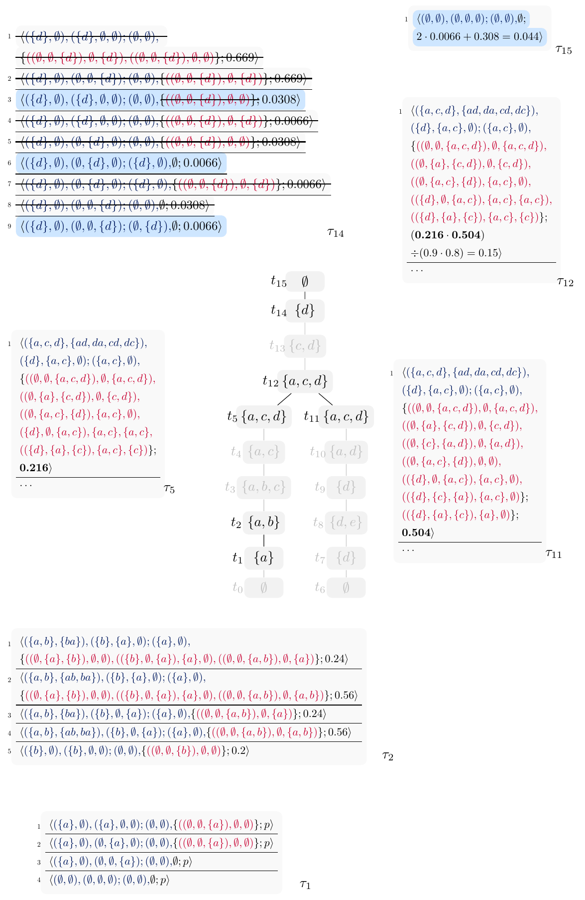

Bio
I’m an AI researcher holding a PhD in Computer Science. My doctoral work focused on decomposition-based algorithms for exact reasoning in structured and probabilistic argumentation. My current work focuses on fine-tuning language models for exact reasoning tasks, including argumentative reasoning.
My research background spans knowledge representation, formal reasoning, and algorithm design. I am now applying this experience to the fine-tuning and evaluation of language models on exact reasoning tasks.
Education
- PhD in Computer Science (awarded with distinction), Graz University of Technology, Graz, Austria (July 2026)
- MSc in Artificial Intelligence, Utrecht University, Utrecht, the Netherlands (August 2019)
- BSc in Computer Science and Engineering, Free University of Bolzano, Bolzano, Italy (July 2017)
Selected Publications
-
Dynamic Programming Algorithms for Probabilistic Bipolar Argumentation Frameworks. In Proc. SAC 2025, 1051–1052.
Dynamic-programming algorithms for reasoning in probabilistic bipolar argumentation frameworks.
-
Advancing Algorithmic Approaches to Probabilistic Argumentation under the Constellation Approach. In Proc. KR 2024, 585–596.
Tree-decomposition-based algorithms that exploit graph structure in probabilistic argumentation.
-
Completing Structured Arguments in Assumption-Based Argumentation. In Proc. JELIA 2025, Part I, 16093:95–111.
A declarative approach to completing partial structured arguments in assumption-based argumentation.
…
Code
Code repositories for my main publications are available on GitHub.
Doctoral Thesis
Title
"Algorithms Exploiting Structure for Argumentative Reasoning"Thesis Overview
Argumentative reasoning is a fundamental decision-making paradigm in AI. It exhibits several desirable features: it is exact, explainable, expressive, and well suited to critical real-world application domains. A major barrier is the high computational complexity that arises across several argumentation formalisms and semantics. In this work, we address this complexity by exploiting underlying structural properties of argumentation graphs, enabling fixed-parameter tractable algorithms, and by developing dynamic programming algorithms whose runtime scales with such properties—in this case, treewidth. We consider several formalisms under different semantics, including:
- Assumption-Based Argumentation (ABA) Frameworks;
- Probabilistic Abstract Argumentation Frameworks (PAF);
- Bipolar Probabilistic Abstract Argumentation Frameworks (BAF).
We develop working prototypes and showcase promising runtime performance. Towards facilitating knowledge engineering in argumentative reasoning, we further investigate structured arguments in ABA and develop a declarative approach to the hard problem of completing partial arguments. Our results encourage extending our algorithms to other prominent semantics and investigating preprocessing techniques that can reduce the treewidth of argumentation frameworks, setting the stage for applying our algorithms. More generally, it is interesting to investigate to what degree the main ideas of our algorithms can be adapted to other parameters that allow parameterised tractability in argumentative reasoning.

Selected Publications
First author
-
Dynamic Programming Algorithms for Probabilistic Bipolar Argumentation Frameworks. In Proc. SAC 2025, 1051–1052.
Dynamic-programming algorithms for reasoning in probabilistic bipolar argumentation frameworks.
-
Advancing Algorithmic Approaches to Probabilistic Argumentation under the Constellation Approach. In Proc. KR 2024, 585–596.
Tree-decomposition-based algorithms that exploit graph structure in probabilistic argumentation.
-
Completing Structured Arguments in Assumption-Based Argumentation. In Proc. JELIA 2025, Part I, 16093:95–111.
A declarative approach to completing partial structured arguments in assumption-based argumentation.
-
Leveraging Structure for Tractable Reasoning in Formal Argumentation. Doctoral Consortium of KR 2024.
A doctoral-consortium overview of structure-aware algorithms for tractable reasoning in formal argumentation.
-
Reasoning in Assumption-Based Argumentation Using Tree-Decompositions. In Proc. JELIA 2023, 14281:192–208.
Tree-decomposition-based algorithms for reasoning in assumption-based argumentation.
-
An overview of machine learning techniques in constraint solving. J. Intell. Inf. Syst. 58(1), 91–118.
A survey of machine-learning techniques for improving constraint solving.
-
PARCo: A Knowledge-Based Agent for Context-Sensitive Reasoning and Decision-Making Regarding Privacy. In Proc. BNAIC/BENELEARN 2019, CEUR-WS 2491.
A thesis abstract presenting a knowledge-based agent for context-sensitive privacy reasoning and decision-making.
Co-authored
-
Sixth International Competition on Computational Models of Argumentation: Preliminary Report. In Proc. Arg&App 2025, 5–13 (invited paper).
A preliminary report on ICCMA 2025 covering the competition tracks, rules, benchmarks, participating solvers, and new features.
-
Towards Psychology-Aware Preference Construction in Recommender Systems: Overview and Research Issues. J. Intell. Inf. Syst. 57(3), 467–489.
An overview of how personality, emotions, and cognitive biases influence preference construction in recommender systems.
-
Do Users Appreciate Explanations of Recommendations? An Analysis in the Movie Domain. RecSys 2021, 645–650.
A user study examining when and why people value explanations in movie recommender systems.
-
An Overview of Recommender Systems and Machine Learning in Feature Modeling and Configuration. In Proc. VaMoS 2021, Article 16, 1–8.
An overview of recommender-system and machine-learning techniques for feature modeling and configuration.
-
Development of a Digital Platform Based on the Integration of Augmented Reality and BIM for the Management of Information in Construction Processes. In Proc. PLM 2018, 46–55.
An augmented-reality and BIM platform for delivering context-aware construction information on site.